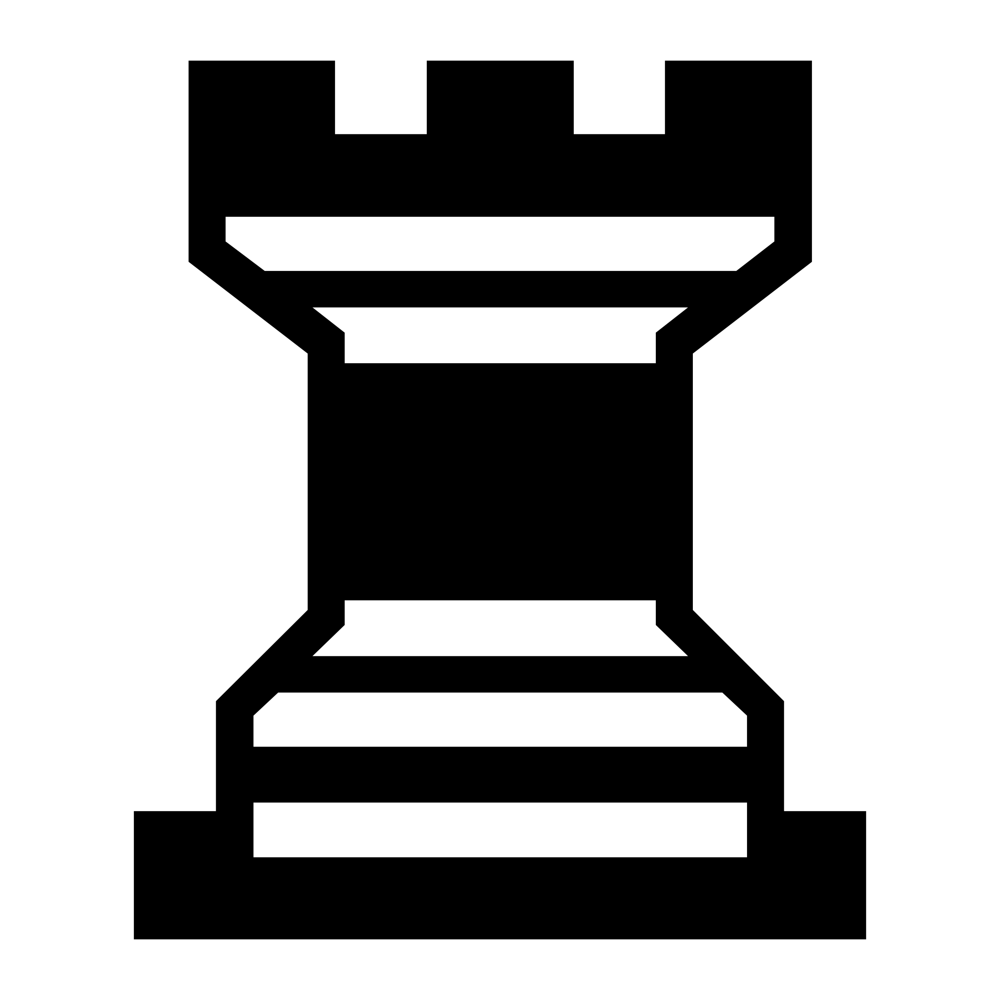
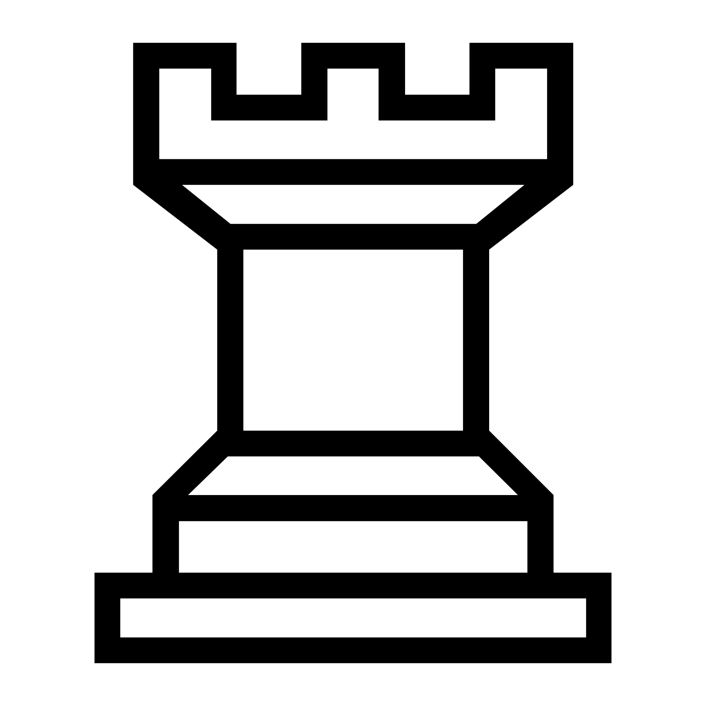

国际象棋规则
国际象棋是两人策略游戏，在8 × 8（64格）的棋盘上进行。
游戏目标
目标是赢得对局：使对方国王被吃变得不可避免。
实际上，当出现将死（checkmate）时，对局立即结束：国王正在被攻击，且不存在任何合法着法能避免下一步被吃。
在国际象棋中，国王不会被实际吃掉：一旦将死成立，即判定胜负。
开局摆放
棋盘
- 棋盘为8列、8行的方格。
- 方格颜色深浅相间。
- 摆放棋盘时，每位玩家右下角必须是浅色格。
行棋顺序
- 白方先行。
- 随后黑方行棋，双方轮流走子。
初始棋子
- 每方共16枚：国王1、后1、车2、象2、马2、兵8。
- 靠近玩家的一排摆放主力棋子（国王、后、车、象、马）。
- 其前一排摆放兵。
第一排的摆放顺序
从白方视角，第一排从左到右依次为： 车、马、象、后、王、 象、马、车。
白后起始在浅色格， 黑后起始在深色格。
开局位置如下：
|  | |||||||
|  |
如无特别说明，棋盘图均以白方视角展示（白方在图的下方）。
棋子走法
基本原则
- 每回合玩家走一步：移动己方一枚棋子。
- 棋子移动到一个目标格。
- 目标格必须为空或被对方棋子占据。
- 不能走到己方棋子所在的格子。
- 若目标格有对方棋子，则该棋子被吃掉并移出棋盘。
- 除马以外，棋子不能越子：路径上的格子必须为空。
- 任何使己方国王处于将军状态（或仍处于将军状态）的走法均为非法着法。
各棋子走法
王（King）
- 王可向任意方向（横、竖、斜）走一格。
- 吃子方式相同（走一格）。
后（Queen）
- 后可沿直线（横、竖、斜）走任意格，路径必须畅通。
- 吃子方式相同。
车（Rook）
- 车可横向或纵向走任意格，路径必须畅通。
- 吃子方式相同。
象（Bishop）
- 象可沿对角线走任意格，路径必须畅通。
- 吃子方式相同。
马（Knight）
- 马走“日”字：先在一个方向走2格（横或竖），再垂直方向走1格。
- 马可以跳过其他棋子。
- 吃子时落在对方棋子所在格。
兵（Pawn）
兵的走法与吃法不同。 白方“前进”指向棋盘图上方；黑方“前进”指向棋盘图下方。
- 兵向前走一格（目标格必须为空）。
- 兵首次移动时，如前方两格均为空，可向前走两格。
- 兵吃子为向前斜走一格（左前或右前）。
- 兵不能直走吃子。
特殊走法
- 王车易位（Castling）
-
王车易位是王与同侧的一辆车共同完成的特殊走法： 王向该车方向移动两格，随后那辆车移动到王的另一侧、紧挨王的格子上。
王车易位仅在同时满足以下条件时才允许：
- 王尚未移动过；
- 参与易位的车尚未移动过；
- 王与该车之间没有任何棋子；
- 易位时王不处于将军；
- 王不穿过被攻击的格子；
- 王落点格不被攻击。
- 吃过路兵（En passant）
-
吃过路兵只适用于兵。 若对方兵从初始位置前进两格，并停在与己方兵横向相邻的位置， 己方兵可在下一手将其吃掉，视同该兵只前进了一格。
吃子时，己方兵向前斜走一格至“被跨越”的格子，对方兵从棋盘上移除。
吃过路兵只能在对方走两格后的紧接着一回合进行； 若错过该时机，则失去此权利。
- 兵升变（Promotion）
-
当兵到达对方底线（最后一行）时，兵必须升变： 兵被替换为同色的后、车、象或马。
不能升变为王。 升变不要求先有被吃掉的棋子可用，因此可能出现多后。
将军与将死
定义
- 将军（Check）：国王被对方至少一枚棋子攻击。
- 解将：走一步合法着法，使国王不再被攻击。
- 将死（Checkmate）：国王被将军且无任何合法着法可以解将。
是否必须喊“将”？
可以口头提示“将”，但并非规则要求。 判断依据始终是棋盘上的真实局面。
国王被将军时可以怎么做？
当国王被将军时，必须走一步合法着法解将，例如：
- 将王移到不被攻击的格子；
- 吃掉进攻棋子（且吃后王不再被攻击）；
- 用棋子挡住攻击路线（仅适用于远程攻击：车、象、后）。
逼和与和棋
逼和（Stalemate）
若轮到某方走棋时： (1) 该方国王未被将军，且 (2) 该方没有任何合法着法， 则为逼和，对局判和棋。
其他和棋情况
- 双方协议和棋：双方可以同意和棋。
- 子力不足和棋：任一方都无法在完美走法下将死对方 （典型例子：王对王；王+象对王；王+马对王）。
- 三次重复和棋：同一局面出现三次（同一方走棋，且权利相同，例如易位/吃过路兵权利）， 可判和棋。是否为申诉制或自动判定，取决于比赛规则或平台设置。
- 50步规则：若连续50步（每方50步，共100个半步）期间没有任何吃子且没有任何兵的移动， 可判和棋（申诉或自动，视规则而定）。
- 死局（Dead position）：无论双方如何走，都不可能出现将死的局面； 该情况下直接判和棋，与轮到哪方无关。
对局结束
- 对局可因将死（胜负已定）、认输或和棋而结束。
- 玩家可在任意时刻认输，表示承认失败。
- 在计时对局中，玩家可能因超时而判负，具体取决于所采用的时间规则。
- 在软件实现中，非法着法（例如让国王处于将军状态）通常会被直接拒绝。
国际象棋与艺术文学
国际象棋启发了许多作品。以下是两部常被提及的经典：
Scacchi ludus
(1527) — Marco Girolamo Vida- 描写诸神之间神话般对弈的诗作。
Caïssa: or The Game of Chess
(1772) — William Jones- 使“卡伊萨（Caïssa）”成为与国际象棋相关的拟人意象的诗作。